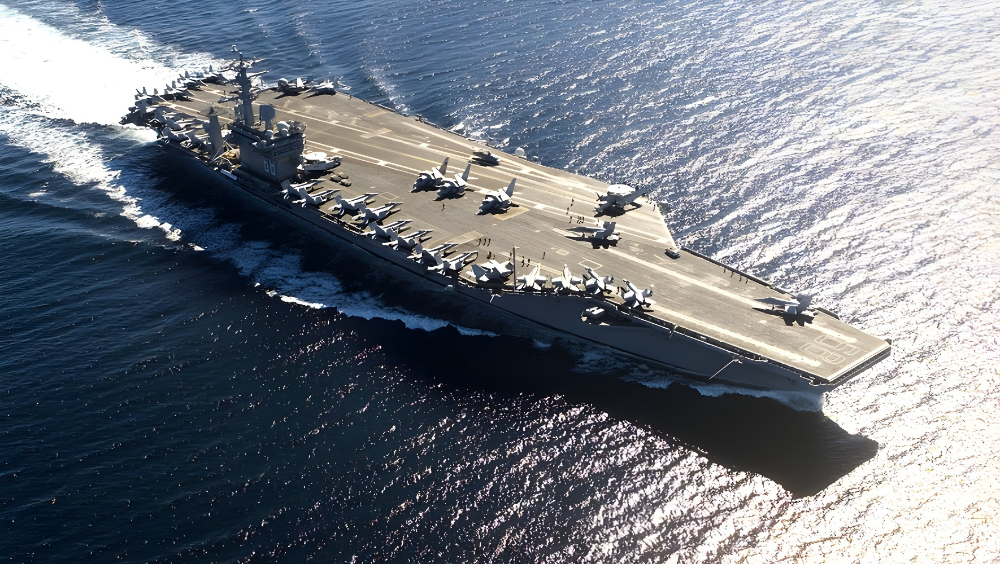

⚓Le 20 mai 2026, le SOUTHCOM américain annonce l'entrée du groupe aéronaval de l'USS Nimitz dans la mer des Caraïbes. Simultanément, le Département de Justice met en examen Raúl Castro pour le meurtre de quatre civils en 1996. Une démonstration de force militaire, un acte judiciaire historique et une crise énergétique cubaine sans précédent : trois lignes de haute tension qui convergent vers un même point de rupture.
Le 7 mars 2026, l'USS Nimitz (CVN-68), le porte-avions à propulsion nucléaire le plus ancien de la flotte américaine, quitte sa base de Bremerton dans l'État de Washington pour ce qui doit être son ultime traversée : rejoindre Norfolk, Virginie, avant son démantèlement prévu en 2026. Cinquante ans de carrière, dix déploiements de combat, du Golfe Persique au détroit de Taïwan.
Mais les plans changent. Le 23 mars, la Marine annonce une prolongation de service jusqu'en mars 2027 pour pallier les retards de livraison de l'USS John F. Kennedy (CVN-79), dernier porte-avions de classe Ford. Dans la foulée, le Nimitz est redirigé vers la zone de responsabilité du SOUTHCOM et participe aux exercices Southern Seas 2026 avec le Brésil et l'Argentine, avant d'entrer dans la mer des Caraïbes le 20 mai 2026.
Le groupe aéronaval qui l'accompagne comprend le Carrier Air Wing 17 (CVW-17) — neuf escadrons dotés de F/A-18 Super Hornets, EA-18G Growlers, E-2D Hawkeyes et MH-60 Seahawks —, le destroyer à missiles guidés USS Gridley (DDG-101) équipé du système Aegis, et le navire ravitailleur USNS Patuxent (T-AO-201), garantissant une autonomie prolongée des opérations.
Le déploiement du Nimitz s'inscrit dans une stratégie de pression multidimensionnelle conduite par l'administration Trump depuis fin 2024. Dès janvier 2025, Washington impose des sanctions sévères visant les approvisionnements pétroliers de l'île, menaçant de représailles tout État ou entreprise livrant du brut à Cuba. Le résultat est un blocus pétrolier de facto qui aggrave la crise énergétique cubaine — déjà la pire depuis les années 1990 — jusqu'à plonger sept des quinze provinces de l'île dans des coupures d'électricité généralisées.
Donald Trump évoque publiquement et à plusieurs reprises la possibilité d'une action militaire contre Cuba, sans en préciser la nature. Les forces américaines déjà présentes dans la région depuis le second semestre 2025 — dont le groupe d'assaut amphibie Iwo Jima, le croiseur USS Lake Erie et le navire de combat littoral USS Billings — sont renforcées par l'arrivée du Nimitz. Le New York Times, citant une source américaine, rapporte que le porte-avions devrait rester plusieurs jours dans la zone, dans une logique de démonstration de force.
« Welcome to the Caribbean, Nimitz Carrier Strike Group! The aircraft carrier USS Nimitz (CVN-68), the embarked Carrier Air Wing 17 (CVW-17), USS Gridley (DDG-101) and USNS Patuxent (T-AO-201) are the epitome of readiness and presence, unmatched reach and lethality, and strategic advantage. »
— SOUTHCOM, publication sur X, 20 mai 2026Le 20 mai 2026, au moment précis où le SOUTHCOM annonce l'entrée du Nimitz dans les Caraïbes, le Département de Justice américain dévoile un acte d'accusation historique : Raúl Castro, 94 ans, ancien président cubain et frère de Fidel, est inculpé pour meurtre, complot et destruction d'aéronefs civils. Les faits remontent au 24 février 1996.
Ce jour-là, deux Cessna 337 Skymaster non armés de l'organisation cubano-américaine Hermanos al Rescate (Frères au secours) sont interceptés et abattus par un MiG-29UB de la Force aérienne cubaine au-dessus des eaux internationales du détroit de Floride, à plusieurs milles de l'espace aérien cubain — selon les conclusions de l'Organisation de l'aviation civile internationale (OACI). Les quatre membres d'équipage périssent : Carlos Costa, Armando Alejandre Jr., Mario de la Peña et Pablo Morales. Un troisième appareil, piloté par le fondateur du groupe José Basulto, parvient à s'échapper.
Fondée en mai 1991 par des pilotes exilés cubains à Miami, Hermanos al Rescate avait initialement pour mission de repérer et signaler les balseros — réfugiés cubains tentant la traversée du détroit en embarcation de fortune. L'organisation avait élargi ses activités à des vols de protestation au-dessus de Cuba, incluant des largages de tracts anti-castristes sur La Havane. Les familles des victimes avaient obtenu en justice civile près de 187 millions de dollars de dommages et intérêts contre le gouvernement cubain, jamais recouvrés.
Fondation d'Hermanos al Rescate par José Basulto à Miami. Mission initiale : secours aux balseros dans le détroit de Floride.
Deux Cessna abattus par un MiG-29UB cubain au-dessus des eaux internationales. Quatre morts : Costa, Alejandre, de la Peña, Morales.
Premiers inculpés en justice fédérale américaine (pilotes cubains, chef de l'armée de l'air). Aucun ne sera jamais jugé, restant à Cuba.
L'USS Nimitz quitte Bremerton pour ce qui devait être son dernier voyage avant démantèlement à Norfolk.
La Marine prolonge le service du Nimitz jusqu'en mars 2027. Le porte-avions est redirigé vers le SOUTHCOM et les exercices Southern Seas 2026.
Double frappe simultanée : entrée du Nimitz dans les Caraïbes + inculpation fédérale de Raúl Castro pour le meurtre de 1996.
Analystes militaires et observateurs diplomatiques s'accordent à voir dans la simultanéité de l'annonce du SOUTHCOM et de l'inculpation de Raúl Castro un signal politique-militaire délibérément coordonné. Certains, cités par Newsweek, évoquent le précédent vénézuélien : en janvier 2026, une séquence comparable — accusations judiciaires, pression militaire, blocus économique — avait précédé une escalade directe des États-Unis contre Caracas.
Pour autant, plusieurs éléments tempèrent l'hypothèse d'une intervention imminente. D'abord, la visite du directeur de la CIA John Ratcliffe à La Havane le 14 mai 2026 — six jours avant l'arrivée du Nimitz — avait ouvert un canal de dialogue direct inédit. Ensuite, le SOUTHCOM souligne que la présence du Nimitz s'inscrit dans le cadre des exercices Southern Seas 2026, débutés plusieurs semaines avant la crise. Enfin, Washington n'a formulé aucune exigence militaire précise à l'égard de La Havane.
L'USS Nimitz au large des côtes cubaines constitue la manifestation la plus spectaculaire d'une pression américaine qui combine sanctions économiques, blocus pétrolier de facto, actes judiciaires visant les dirigeants historiques du régime et dialogue de crise par les voies les moins attendues — comme la visite du directeur de la CIA. Cuba se trouve dans une position de vulnérabilité inédite depuis la chute de l'URSS : sans pétrole, sans électricité pour une partie de sa population, et sous une pression militaire visible depuis ses côtes. La présence du porte-avions ne clôt pas la séquence diplomatique ouverte par Ratcliffe — elle la conditionne. Washington joue simultanément la carotte de l'aide humanitaire et le bâton de la force navale, dans un équilibre instable dont l'issue dépendra autant de la résistance du régime de Miguel Díaz-Canel que de la cohérence d'une administration Trump dont les signaux restent, par nature, contradictoires.
El 20 de mayo de 2026, el SOUTHCOM estadounidense anuncia la entrada del grupo de ataque del USS Nimitz en el mar Caribe. Simultáneamente, el Departamento de Justicia procesa a Raúl Castro por el asesinato de cuatro civiles en 1996. Una demostración de fuerza militar, un acto judicial histórico y una crisis energética cubana sin precedentes : tres líneas de alta tensión que convergen hacia un mismo punto de ruptura.
El 7 de marzo de 2026, el USS Nimitz (CVN-68), el portaaviones de propulsión nuclear más antiguo de la flota estadounidense, abandona su base de Bremerton, en el estado de Washington, para lo que debía ser su último viaje: dirigirse a Norfolk, Virginia, antes de su desguace previsto en 2026. Cincuenta años de servicio, diez despliegues de combate, del Golfo Pérsico al estrecho de Taiwán.
Pero los planes cambian. El 23 de marzo, la Marina anuncia una prórroga de servicio hasta marzo de 2027 para compensar los retrasos en la entrega del USS John F. Kennedy (CVN-79), último portaaviones de clase Ford. A continuación, el Nimitz es redirigido hacia la zona de responsabilidad del SOUTHCOM y participa en los ejercicios Southern Seas 2026 con Brasil y Argentina, antes de entrar en el mar Caribe el 20 de mayo de 2026.
El grupo de ataque que le acompaña comprende el Carrier Air Wing 17 (CVW-17) — nueve escuadrones con F/A-18 Super Hornets, EA-18G Growlers, E-2D Hawkeyes y MH-60 Seahawks —, el destructor de misiles guiados USS Gridley (DDG-101) equipado con el sistema Aegis, y el buque de reabastecimiento USNS Patuxent (T-AO-201), garantizando una autonomía operativa prolongada.
El despliegue del Nimitz se inscribe en una estrategia de presión multidimensional llevada a cabo por la administración Trump desde finales de 2024. Desde enero de 2025, Washington impone sanciones severas dirigidas a los suministros de petróleo de la isla, amenazando con represalias a cualquier Estado o empresa que entregue crudo a Cuba. El resultado es un bloqueo petrolero de facto que agrava la crisis energética cubana — ya la peor desde los años noventa — hasta sumir a siete de las quince provincias de la isla en cortes de electricidad generalizados.
Donald Trump evoca públicamente y en repetidas ocasiones la posibilidad de una acción militar contra Cuba, sin precisar su naturaleza. Las fuerzas estadounidenses ya presentes en la región desde el segundo semestre de 2025 — entre ellas el grupo de asalto anfibio Iwo Jima, el crucero USS Lake Erie y el buque de combate litoral USS Billings — se ven reforzadas con la llegada del Nimitz. El New York Times, citando una fuente estadounidense, informa de que el portaaviones permanecerá varios días en la zona, en una lógica de demostración de fuerza.
« ¡Bienvenido al Caribe, Grupo de Ataque del USS Nimitz! El portaaviones USS Nimitz (CVN-68), el Carrier Air Wing 17 (CVW-17), el USS Gridley (DDG-101) y el USNS Patuxent (T-AO-201) son la representación perfecta de la disponibilidad y la presencia, el alcance y la letalidad sin rival, y la ventaja estratégica. »
— SOUTHCOM, publicación en X, 20 de mayo de 2026El 20 de mayo de 2026, en el mismo momento en que el SOUTHCOM anuncia la entrada del Nimitz en el Caribe, el Departamento de Justicia estadounidense desvela una acusación histórica : Raúl Castro, de 94 años, expresidente cubano y hermano de Fidel, es imputado por asesinato, conspiración y destrucción de aeronaves civiles. Los hechos se remontan al 24 de febrero de 1996.
Ese día, dos Cessna 337 Skymaster desarmados de la organización cubano-americana Hermanos al Rescate son interceptados y derribados por un MiG-29UB de la Fuerza Aérea cubana sobre aguas internacionales del estrecho de Florida, a varias millas del espacio aéreo cubano — según las conclusiones de la Organización de Aviación Civil Internacional (OACI). Los cuatro tripulantes mueren : Carlos Costa, Armando Alejandre Jr., Mario de la Peña y Pablo Morales. Un tercer aparato, pilotado por el fundador del grupo, José Basulto, logra escapar.
Fundada en mayo de 1991 por pilotos exiliados cubanos en Miami, Hermanos al Rescate tenía como misión inicial localizar y alertar sobre los balseros — refugiados cubanos que intentaban cruzar el estrecho en embarcaciones precarias. La organización había ampliado sus actividades a vuelos de protesta sobre Cuba, con lanzamientos de octavillas anticastristas sobre La Habana. Las familias de las víctimas obtuvieron en justicia civil cerca de 187 millones de dólares en daños y perjuicios contra el gobierno cubano, nunca recuperados.
Fundación de Hermanos al Rescate por José Basulto en Miami. Misión inicial : socorro a los balseros en el estrecho de Florida.
Dos Cessna derribados por un MiG-29UB cubano sobre aguas internacionales. Cuatro muertos : Costa, Alejandre, de la Peña, Morales.
Primeros imputados en justicia federal estadounidense (pilotos cubanos, jefe de la fuerza aérea). Ninguno será nunca juzgado, permaneciendo en Cuba.
El USS Nimitz sale de Bremerton para lo que debía ser su último viaje antes del desguace en Norfolk.
La Marina prorroga el servicio del Nimitz hasta marzo de 2027. El portaaviones es redirigido al SOUTHCOM y a los ejercicios Southern Seas 2026.
Doble golpe simultáneo : entrada del Nimitz en el Caribe + imputación federal de Raúl Castro por el asesinato de 1996.
Analistas militares y observadores diplomáticos coinciden en ver en la simultaneidad del anuncio del SOUTHCOM y la imputación de Raúl Castro una señal político-militar deliberadamente coordinada. Algunos, citados por Newsweek, evocan el precedente venezolano : en enero de 2026, una secuencia comparable — acusaciones judiciales, presión militar, bloqueo económico — había precedido una escalada directa de Estados Unidos contra Caracas.
Sin embargo, varios elementos atemperan la hipótesis de una intervención inminente. En primer lugar, la visita del director de la CIA John Ratcliffe a La Habana el 14 de mayo de 2026 — seis días antes de la llegada del Nimitz — había abierto un canal de diálogo directo sin precedentes. Además, el SOUTHCOM subraya que la presencia del Nimitz se enmarca en los ejercicios Southern Seas 2026, iniciados varias semanas antes de la crisis. Por último, Washington no ha formulado ninguna exigencia militar concreta hacia La Habana.
El USS Nimitz frente a las costas cubanas es la manifestación más espectacular de una presión estadounidense que combina sanciones económicas, bloqueo petrolero de facto, actos judiciales dirigidos a los dirigentes históricos del régimen y diálogo de crisis por las vías más inesperadas — como la visita del director de la CIA. Cuba se encuentra en una posición de vulnerabilidad inédita desde la caída de la URSS : sin petróleo, sin electricidad para parte de su población, y bajo una presión militar visible desde sus costas. La presencia del portaaviones no clausura la secuencia diplomática abierta por Ratcliffe — la condiciona. Washington juega simultáneamente la zanahoria de la ayuda humanitaria y el palo de la fuerza naval, en un equilibrio inestable cuyo desenlace dependerá tanto de la resistencia del régimen de Miguel Díaz-Canel como de la coherencia de una administración Trump cuyos mensajes siguen siendo, por naturaleza, contradictorios.